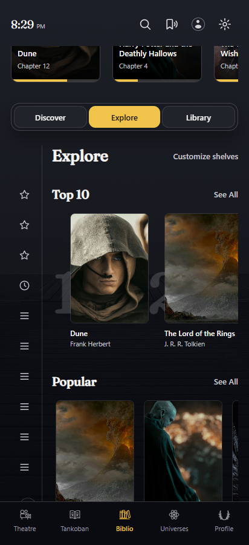
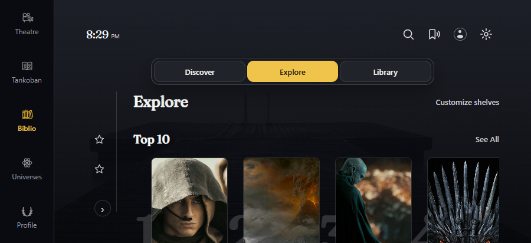
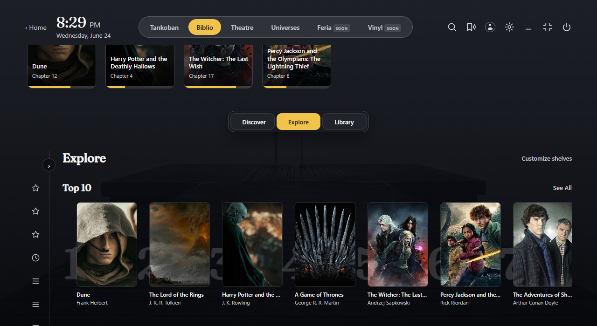

Biblio / home & shelves
The approved desktop Biblio world and its Explore book rails, fitted to provisional Android phone, landscape and tablet viewports. The original Discover catalogue, Continue Reading, Reading Desk reference, shelf customization and existing popups are included in one interactive reviewer.
Open interactive Biblio studyInside the study, use the external review controls to rotate, change insets or font size, jump to Explore, and inspect open controls. The app mock has no backend, provider calls or external network dependencies.






All charts, shelf orders, progress and ratings are illustrative. Local titled saga images stand in for actual book covers not bundled with the frozen sources. OnePlus viewport sizes are provisional; screenshots verify only headless HTML rendering, not QML runtime or hardware behaviour.